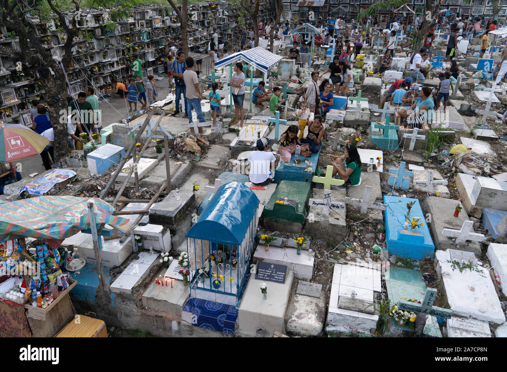
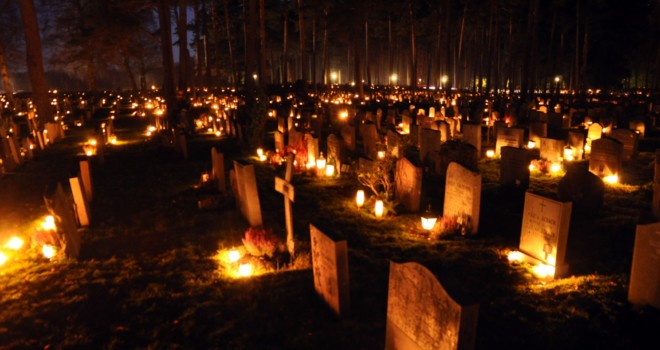

Introduction
All Saints' Day, or "Undas" as it is locally known, is a solemn holiday in the Philippines where families gather to remember and honor their deceased loved ones by visiting cemeteries, offering prayers, and lighting candles.
Traditions and Practices
Filipinos celebrate All Saints' Day by cleaning and decorating the graves of their loved ones with candles and flowers. Many families hold overnight vigils, sharing meals and memories, creating a sense of togetherness and remembrance.
Modern Celebrations
While traditional practices remain, some modern influences have shaped the way All Saints' Day is celebrated today. Social gatherings at cemeteries, along with community prayers, are common practices.
